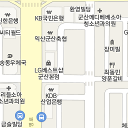
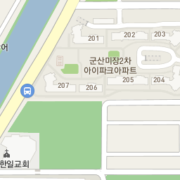
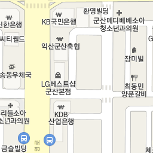
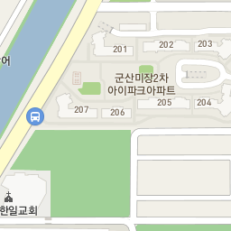

군산의 모범식당 현황
통계
| 순번 | 업소명 | 업종 | 도로명주소 | 행정동 | 전화번호 | 군산사랑상품권 |
|---|
| 8 | 취향 | 미분류됨 | 전북 군산시 새만금북로 247 | 소룡동 | - | X |
| 333 | 어시장활어회직거래판매장 | 미분류됨 | 전북 군산시 신평길 20 | 수송동 | - | X |
| 412 | 화심순두부 | 미분류됨 | 전북 군산시 미장서로 40 | 수송동 | - | X |
| 420 | 바다회집현대코아점 | 한식 | 전북 군산시 문화안길 11 | 신풍동 | 0634661197 | O |
| 538 | 보배밥상 | 한식 | 전북 군산시 남수송4길 8-6 | 수송동 | 0634626692 | O |
| 806 | 남원용담골추어탕 | 미분류됨 | 전북 군산시 축동안3길 18 | 서수면 | - | X |
| 983 | 웰미가 | 미분류됨 | 전북 군산시 수송1길 17 | 수송동 | - | X |
| 1053 | 신고궁한정식 | 한식 | 전북 군산시 조촌1길 10 | 조촌동 | 0634510111 | O |
| 1137 | 샤브쌈주머니 | 미분류됨 | 전북 군산시 수송로 315 | 수송동 | - | X |
| 1240 | 한소끔 | 한식 | 전북 군산시 백토로 284-8 | 나운동 | - | O |
| 1276 | 궁전꽃게장 | 미분류됨 | 전북 군산시 궁포1로 24-5 | 조촌동 | - | X |
| 1349 | 명륜진사갈비 | 미분류됨 | 전북 군산시 진포로 211 | 경암동 | - | X |
| 1821 | 함흥관 | 한식 | 전북 군산시 해망로 550 | 해신동 | - | O |
| 2034 | 매주육일 | 미분류됨 | 전북 군산시 궁포3로 13 | 조촌동 | - | X |
| 2075 | 명륜진사갈비 | 미분류됨 | 전북 군산시 문화로 95 | 신풍동 | - | X |
| 2592 | 가든바베큐 | 한식 | 전북 군산시 옥산면 대위로 128 | 옥산면 | 0634645282 | O |
| 2945 | 아리랑 | 한식 | 전북 군산시 해망로 224 | 해신동 | 0634421207 | O |
| 2958 | 콩뜰 | 한식 | 전북 군산시 구영7길 21-9 | 중앙동 | 0634452219 | O |
| 3174 | 새만금횟집 | 한식 | 전북 군산시 비응안7길 13 | 소룡동 | 0634641001 | O |
| 3187 | 장국명가 | 한식 | 전북 군산시 새터길 25 | 구암동 | 0634433680 | O |
| 3220 | 고래면옥 | 한식 | 전북 군산시 나운5길 8 | 나운동 | 0634681616 | O |
| 3570 | 군산한우촌 | 한식 | 전북 군산시 대학로 649 | 나운동 | 0634656969 | O |
| 3584 | 에이뷔페 | 미분류됨 | 전북 군산시 공단대로 179 | 수송동 | - | X |
| 3655 | 전주우족설렁탕 | 한식 | 전북 군산시 대학로 88 | 삼학동 | 0634459502 | O |
| 4347 | 해송횟집 | 미분류됨 | 전북 군산시 서수송1길 12-5 | 수송동 | - | X |
| 5185 | 사골뚝배기 | 한식 | 전북 군산시 거석길 29 | 월명동 | - | O |
| 5214 | 쌍용반점 | 중식 | 전북 군산시 내항2길 121 | 해신동 | 0634452633 | O |
| 5265 | 등대로 | 한식 | 전북 군산시 비응로 71 | 소룡동 | 0634469500 | X |
| 5268 | 수원성 | 한식 | 전북 군산시 월명로 281 | 월명동 | 0634530002 | X |
| 5269 | 스위트인디아 | 아시아음식 | 전북 군산시 거석길 36 | 월명동 | 0634458522 | X |
| 5271 | 압강옥 | 한식 | 전북 군산시 삼수길 46 | 개정동 | 0634522777 | X |
| 5282 | 제주도횟집 | 한식 | 전북 군산시 동메1길 9-2 | 수송동 | - | X |
| 5290 | 명륜진사갈비조촌점 | 한식 | 전북 군산시 진포로 211 | 조촌동 | 0634458500 | X |
| 5291 | 보배밥상 | 한식 | 전북 군산시 남수송4길 8-6 | 수송동 | 0634616692 | X |
| 5292 | 가시리 | 한식 | 전북 군산시 미원3길 13 | 흥남동 | 0634464613 | X |
| 5293 | 갈비스토리 | 한식 | 전북 군산시 하나운1길 15 | 나운동 | 0634422832 | X |
| 5294 | 금송 | 한식 | 전북 군산시 남수송6길 7 | 수송동 | 0634646038 | X |
| 5295 | 남산식당 | 한식 | 전북 군산시 흥남2길 60 | 흥남동 | 0634424442 | X |
| 5296 | 신선가든 | 한식 | 전북 군산시 회현면 대위안길 45 | 회현면 | 0634666162 | X |
| 5297 | 고래설렁탕 | 한식 | 전북 군산시 공단대로 408 | 나운동 | 0634680606 | X |
| 5298 | 지미원 | 한식 | 전북 군산시 부곡1길 6 | 나포면 | 0634633900 | X |
| 5299 | 삼미정 | 한식 | 전북 군산시 칠성5길 159 | 소룡동 | 0634650775 | X |
| 5300 | 궁전갈치찜 | 한식 | 전북 군산시 구영6길 71 | 중앙동 | 0634457770 | X |
| 5301 | 미향 | 중식 | 전북 군산시 소룡길 52 | 소룡동 | 0634651910 | X |
| 5302 | 금강해물칼국수 | 한식 | 전북 군산시 성산면 철새로 31 | 성산면 | 0634538858 | X |
| 5303 | 조선화로집 군산수송점 | 한식 | 전북 군산시 월명로 255 | 월명동 | 0634676067 | X |
| 5304 | 온새미로 | 한식 | 전북 군산시 신설2길 5-6 | 나운동 | 0634636334 | X |
| 5305 | 장가네 | 한식 | 전북 군산시 비응동로 67 | 소룡동 | 0634662995 | X |
| 5306 | 다빈회관 | 한식 | 전북 군산시 수송안길 25 | 수송동 | 0634667778 | X |
| 5307 | 명인 | 한식 | 전북 군산시 임피면 서원석곡로 602 | 임피면 | 0634522459 | X |
| 5308 | 마루벌돌구이군산점 | 한식 | 전북 군산시 축동안길 56 | 서수면 | 0634439233 | X |
| 5309 | 현대옥(미장점) | 한식 | 전북 군산시 미장안7길 34 | 수송동 | 0634529885 | X |

.png)
.png) 
